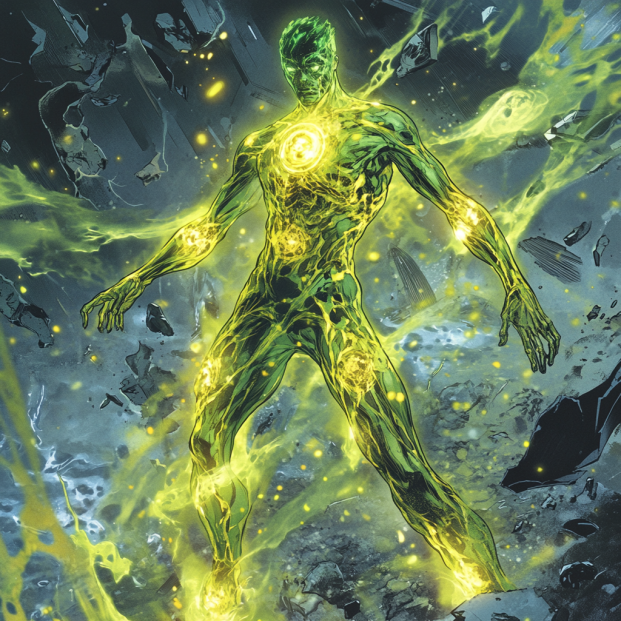

Isotope: Trials and Tribulation

A Name Born of Power
Isaiah Thompson didn't ask to be different. He didn't want to see the world move slower around him, to feel his nerves crackling with energy that had no outlet. But from a young age, he knew. He was more.
Growing up in Dorchester, Boston, meant learning to move fast. To stay ahead. The streets had a rhythm—who to avoid, where not to walk, when to fight and when to run. Isaiah learned quickly. But it wasn't just instinct. It was something deeper.
By the time he was ten, he could feel things before they happened. He saw the twitch in someone's knuckles before a punch landed. Heard the shift in their breath before they shouted. Reacted before they even made their move.
People said he had eyes in the back of his head.
That wasn't quite right.
What he had was power—raw, untapped, waiting.
The Aunt Who Raised Him
Maria Thompson wasn't just his aunt—she was his mother in every way that mattered. She worked long hours at The Blue Plate Special, her little diner tucked away on a busy street, serving anyone who walked through the door.
Isaiah spent his childhood in that diner. Booths filled with old-timers telling stories, teenagers skipping school, workers grabbing coffee before their shifts. Maria knew everyone. She looked out for them.
And she looked out for him.
She did her best to keep him away from the gangs, the violence. But the streets had their own gravity.
At fifteen, that gravity finally pulled him in.
The First Taste of Power
He didn't start the fight.
But he sure as hell ended it.
Three older boys cornered him in an alley. Demanding his phone, his jacket. He knew them—part of a local crew trying to prove themselves. They wanted to hurt him.
They never got the chance.
A fist swung at his face. Before Isaiah even thought about moving, his body reacted. The world slowed. His vision sharpened. A white-hot pulse of energy erupted from his palms, flinging his attackers backwards like rag dolls.
One landed against a dumpster, shoulder dislocated. Another hit the pavement, gasping for air. The third? A clean shot to the kneecap, that's right! Energy arrow to the knee!
Not lethal. But precise.
Isaiah stood over them, heart hammering. He hadn't aimed—but somehow, every blast had landed exactly where he intended.
And for the first time in his life, he realized:
I could have done worse.
A Hero's Path
Word spread fast. There was a kid in Dorchester who could throw people like they weighed nothing. Gangs started watching him. Some wanted him on their side.
Maria? She wasn't having it.
She told him the truth: Power isn't what makes a man. It's what he does with it.
Then the X-Men came.
They had been watching. They had seen him protect people during a gang fight. Shielding civilians with an invisible wall of force, redirecting bullets mid-air with terrifying precision.
They made him an offer. Training. A real future. A place on Krakoa.
Maria told him to go. To become something better.
And so, at sixteen, Isaiah left Boston behind.
Training for Power
Krakoa was unlike anything Isaiah had ever imagined. A place where mutants weren't feared or hunted. Where power wasn't a curse—it was a weapon. A tool.
At first, he struggled. His abilities were instinctual, raw. His barriers were weak. His blasts were powerful but inconsistent. He lacked control.
That changed under the right teachers.
He trained alongside veteran warriors, learning to turn his abilities into something tactical. His barriers became stronger—capable of shielding entire squads, deflecting energy blasts, withstanding firepower.
His force blasts became more than just raw energy. They became precise. He could target pressure points, armor weaknesses, even disarm opponents without killing them.
But Krakoa didn't just teach him power. It taught him war.
And Isaiah? He learned fast.
His leadership skills became evident. He understood strategy, tactics, battlefield positioning. Others followed him because he knew how to control a fight.
At nineteen, he was one of the best. A hero in the making.
Then he got the call.
The Return and the Fall
Dorchester wasn't supposed to feel smaller.
But when Isaiah returned, it did. The streets hadn't changed. The people hadn't changed. But something was missing.
Maria was gone.
A new gang had moved in while he was away. Shaking down businesses for protection money. Extorting the people Maria had spent her life serving.
She stood her ground. She trusted the police to handle it.
They didn't.
One night, the Blue Plate Special burned. Maria was trapped inside. The fire spread too fast.
By the time Isaiah got there, it was too late. There was nothing left but charred wood and smoke.
He searched for answers. And he found them.
Detective Ray Costigan.
Maria had gone to him. Begged for help. Costigan had waved her off, let the gang do what they wanted. He had taken their money.
And now she was dead.
Isaiah went to the station. Demanded justice. They laughed in his face.
That's when Isaiah finally understood.
There was no justice. Only power.
The Sisters Three
He wasn't alone in his grief.
His cousins—Elena, Danielle, and Selena—had lost their mother too.
- Psi Witch (Elena) -- Could break minds, tear apart thoughts, rewrite memories.
- Tempest (Danielle) -- The storm followed her moods. Lightning and wind were her weapons.
- Umbra (Selena) -- A living shadow. She moved through darkness like water.
They had trusted the system. And now, they knew better.
Now, they only trusted each other.
The Tribulation Begins
Isaiah died in the ashes of the Blue Plate Special.
In his place stood Isotope.
The Thompson sisters followed him, bound by blood and vengeance. Together, they weren't just a gang. They were a reckoning.
The streets would never be the same.
And Detective Costigan? He was still out there.
Justice had failed. Now it was time for something else.